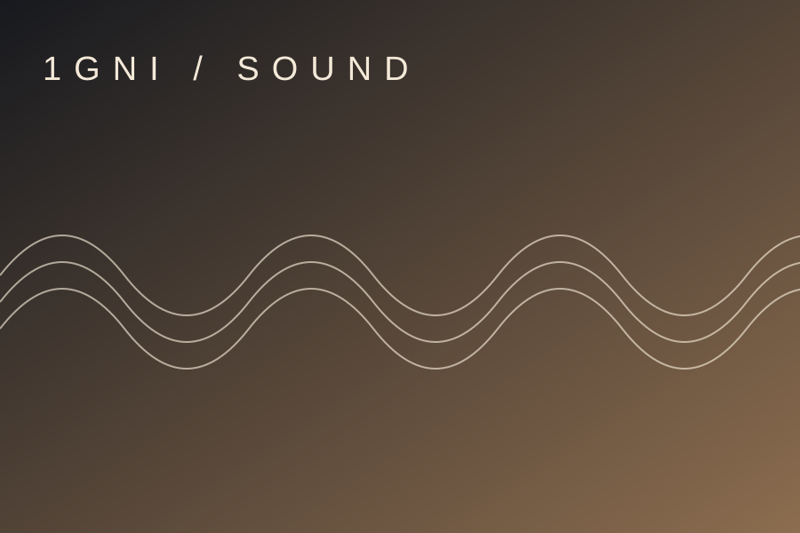
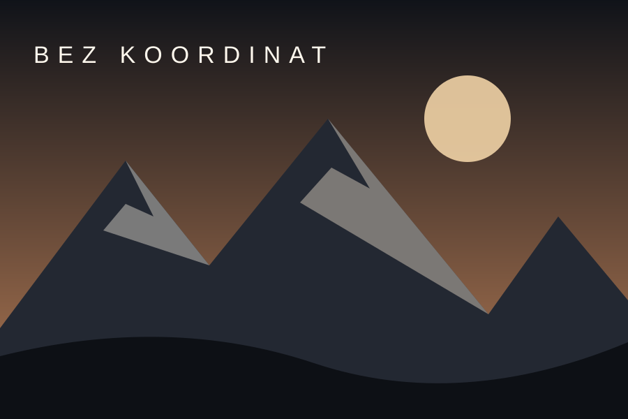
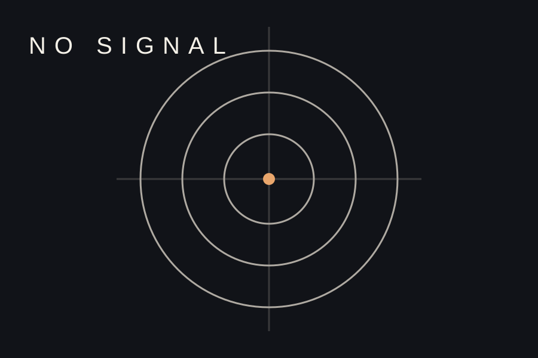

Альбом / проект 1GNI
Без координат
Концепция о дороге, свободе и поиске своего направления.
К музыкальному разделу ↗Релизы и обложки
Музыкальные работы и визуальные главы проекта 1GNI.
Альбом / проект 1GNI
Концепция о дороге, свободе и поиске своего направления.
К музыкальному разделу ↗

Визуальная глава
Графический образ проекта. Не обозначает отдельный музыкальный релиз.

Арт
Дополнительная графика, созданная для оформления сайта.

Арт
Абстрактная иллюстрация для визуального мира 1GNI.

Арт
Атмосферная иллюстрация, не являющаяся клипом или тизером.
Примечание: графические иллюстрации в каталоге — элементы оформления сайта, а не заявления о выпущенных релизах.
Подробнее
Краткая информация о музыкальном проекте.